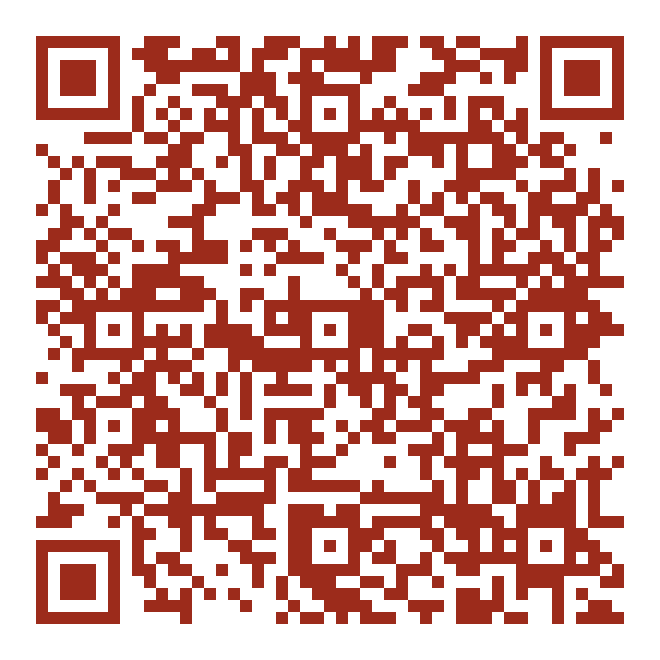

Captação de leads no evento de condomínios: a pessoa se cadastra pelo QR code, recebe o número do sorteio no WhatsApp, e dias depois recebe um voucher de cookie grátis para aparecer na loja.

É este QR que vai no display do balcão e nos materiais do evento. Ele abre direto a página de cadastro — sem login, sem app.
fredpetrutche.github.io/projetos/acoes-de-loja/sorteio-condominios/cadastro/Quem não quiser apontar a câmera consegue digitar o endereço, mas o QR é o caminho de verdade: no balcão, com fila, ninguém digita isso.
Cartazes para imprimir — duas versões, em 10×15, A6 e A4 →O evento junta síndicos, zeladores e conselheiros de condomínio num lugar só — exatamente quem decide a compra coletiva de um prédio inteiro. A isca é o sorteio; o que a loja leva do evento é o WhatsApp dessa gente, com o condomínio e o cargo de cada um.
O sorteio acontece ao vivo, no evento. O voucher é o segundo tempo: alguns dias depois, todo mundo que participou recebe um cookie grátis para ir à loja — é ele que transforma um cadastro numa visita.
Tudo sai pelo número da gestão (final 6629) — o mesmo do fechamento de caixa e dos checklists. Clique para ver o texto exato de cada momento.